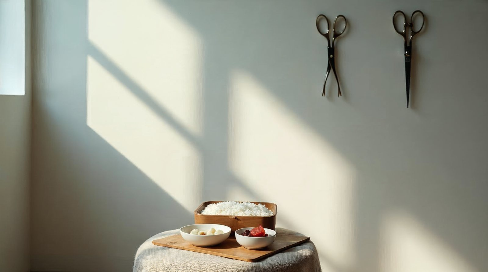
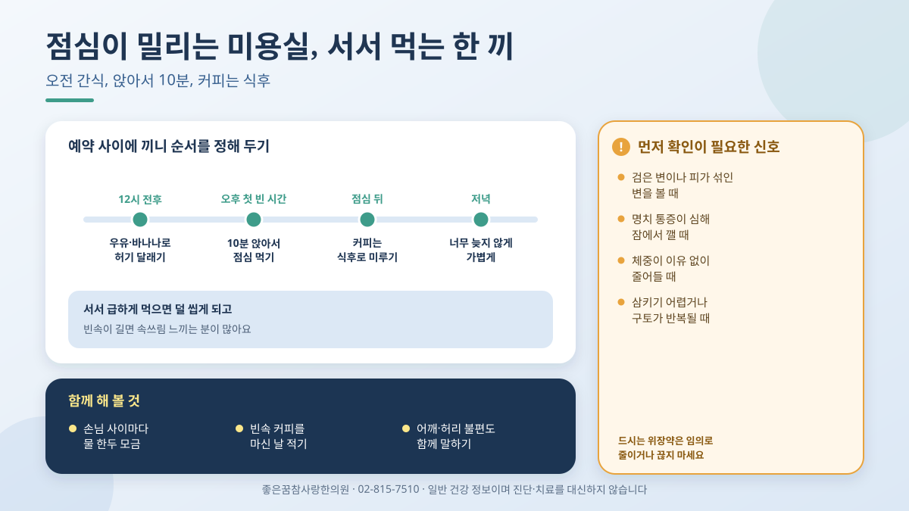

이종호 한의사 감수좋은꿈참사랑한의원 대표원장 (한의사 면허번호 19769)발행 2026-11-23 · 수정 2026-11-26
이 글의 차례
미용 일로 점심을 거르거나 서서 급하게 먹는 날이 이어지면 속쓰림과 더부룩함이 생기기 쉽습니다. 저는 무엇을 드셨는지보다 몇 시에, 어떤 자세로, 몇 분 만에 드셨는지부터 여쭙고, 예약 사이에 지킬 수 있는 작은 식사 순서를 함께 정합니다.
오후 두 시 사십 분. 드라이를 마친 손님을 배웅하고 나서야 아침에 사 둔 김밥이 생각납니다. 카운터 뒤에 선 채로 서너 개를 밀어 넣는데, 문이 열리고 다음 예약 손님이 들어옵니다. 남은 김밥은 은박지에 싸여 다시 서랍으로 들어가지요.
미용실은 손님 예약에 맞춰 움직이다 보니 점심이 오후 서너 시로 밀리거나 아예 거르는 날이 많습니다. 그 사이는 커피 한 잔으로 버티시는 경우가 흔합니다. 가게 문을 닫고 나서야 하루 첫 끼다운 끼니를 드신다는 분도 계십니다.
손님 머리는 하루에도 몇 번씩 꼼꼼히 들여다보면서, 정작 내 밥은 몇 숟가락 먹었는지 셀 겨를도 없는 날들. 진료실에서 그런 이야기를 들으면, 이분에게는 몸을 돌보는 일도 따로 시간을 내야 하는 일이었구나 싶습니다.
왜 이런 불편이 생길 수 있나요
점심이 늦어져 빈속이 길어지면 속쓰림을 느끼는 분이 많습니다. 그 빈속에 마신 커피가 속을 자극하는 경우도 있고요. 오전 내내 커피로 버티다 오후에 명치가 쓰리다는 말씀을 자주 듣는 데에는 이런 사정이 있습니다.
서서 급하게 먹으면 덜 씹고 빨리 삼키게 되어 더부룩함이 생기기 쉽습니다. 급하게 삼키다 보면 공기도 함께 삼키기 쉬워, 트림이 잦거나 배가 빵빵하다고 느끼는 분도 있습니다.
하루 종일 서서 팔을 들고 일하면 몸의 긴장이 소화에도 영향을 줄 수 있습니다. 손님 응대로 긴장한 상태에서 먹으면 같은 양이라도 속이 더 불편하다는 분이 있지요. 긴장하면 위장의 움직임이 영향을 받을 수 있어, 저는 소화를 볼 때 긴장과 잠을 함께 살핍니다.
점심을 거른 날은 저녁에 한꺼번에 몰아 먹기 쉽습니다. 늦게 많이 먹고 바로 누우면 속이 무거운 채로 잠들게 되고, 잠이 얕으면 다음 날 아침 입맛도 없기 쉽습니다. 그러면 또 아침을 거르고 커피로 버티는 하루가 되풀이되지요.
속쓰림인지 더부룩함인지, 언제 오는지가 단서입니다
속이 불편하다는 말 안에도 결이 여러 가지입니다. 점심 전 빈속일 때 명치가 쓰린 분이 있고, 급하게 먹은 직후 배가 꽉 막힌 듯 더부룩한 분이 있습니다. 밤늦게 몰아 먹은 날 잠자리에서 신물이 올라오는 것 같다는 분도 계십니다.
저는 이 차이를 시간으로 나눠 여쭙습니다. 빈속에 오는지, 먹고 나서 바로 오는지, 누웠을 때 오는지요. 시간대가 보이면 점심을 당길지, 먹는 속도를 늦출지, 저녁을 가볍게 할지처럼 먼저 바꿀 것이 달라집니다.
불편한 자리도 단서입니다. 명치가 쓰린지, 배 전체가 빵빵한지, 아랫배가 묵직한지에 따라 여쭙는 것이 달라집니다. 아랫배가 묵직하고 화장실이 며칠씩 시원치 않다면 물 마시는 양과 화장실 참는 습관을 함께 봅니다.
속쓰림과 신물이 오래간다면 속쓰림과 신물이 오래 갈 때 어떤 점을 살펴보고, 언제 검사를 받아야 하나요?를 함께 읽어 보세요.
먹고 나면 더부룩한 쪽이 더 힘드시다면 식사 뒤에 속이 더부룩한 것은 무엇 때문이고, 속쓰림과는 어떻게 다른가요?에 둘의 차이를 더 자세히 적어 두었습니다.
먼저 이렇게 여쭙니다
- 점심은 보통 몇 시에 드시나요?
- 앉아서 드시나요, 서서 드시나요?
- 속쓰림이나 더부룩함은 언제 느끼시나요?
- 커피나 단 음료로 끼니를 대신하는 날이 있나요?
- 저녁은 몇 시쯤, 어느 정도 드시나요?
여기에 하루에 물을 얼마나 드시는지, 화장실은 편한지, 잠은 어떤지도 이어서 여쭙습니다. 먹는 일과 내보내는 일, 자는 일은 서로 맞물려 있어서 하나만 떼어 보면 놓치는 것이 생기기 때문입니다.
예를 들면 이런 경우입니다
예를 들어 예약이 꽉 찬 주말이라면 점심이 아예 사라지는 날이 많습니다. 이런 날은 출근 전 아침을 조금 든든히 드시고, 오전 손님 사이에 작은 주먹밥이나 두유처럼 한 손으로 먹을 수 있는 것을 챙겨 빈속이 길어지지 않게 하자고 말씀드립니다.
예를 들어 혼자 가게를 꾸려 자리를 비우기 어려운 분이라면, 펌이나 염색약을 바르고 기다리는 시간을 점심 시간으로 삼아 보세요. 손님이 기다리는 동안 안쪽 의자에 앉아 10분이라도 먹는 편이, 손님이 다 갈 때까지 미루는 것보다 속에는 덜 부담스럽습니다.
예를 들어 가게 문을 닫고 밤 아홉 시가 넘어 첫 끼를 드시는 분이라면, 그 한 끼를 줄이시라기보다 오후 서너 시에 작은 끼니를 하나 끼워 넣어 하루 식사를 나누자고 합니다. 저녁은 잠들기 3시간 전쯤 가볍게 마치는 쪽을 목표로 둡니다.
스스로 점검해 보세요
요즘 일주일을 떠올리며 해당하는 것을 골라 보세요.
- 점심을 오후 세 시 넘어 먹거나 거르는 날이 일주일에 절반을 넘는다
- 점심을 서서 5분 안에 먹는 날이 많다
- 빈속에 커피로 오전을 버틴다
- 손님이 몰리는 날일수록 속이 더 쓰리거나 더부룩하다
- 하루 중 가장 많이 먹는 끼니가 밤늦은 저녁이다
- 물을 거의 안 마시고 화장실을 자주 참는다
두세 가지가 겹친다면 메뉴를 바꾸기 전에 먹는 시각과 자세부터 손볼 때입니다.
일상에서 먼저 해 볼 수 있는 것
- 예약 사이에 10분이라도 앉아서 먹는 시간 정해 두기
- 점심이 늦어지는 날은 오전에 간단한 간식 챙기기
- 커피는 빈속보다 식후에 마시기
- 손님 사이마다 물을 한두 모금씩 마시기
- 저녁은 너무 늦지 않게 가볍게 먹기
예를 들어 오전 손님이 끝나는 12시 전후에 우유나 바나나로 간단히 허기를 달래 두고, 오후 첫 빈 시간에 10분 앉아서 점심을 먹는 순서를 정해 보세요. 커피는 점심을 먹은 뒤로 미루는 것부터 시작합니다.
앉아서 먹는 10분이 쉽지 않다는 것을 압니다. 그래도 서서 먹을 때와 앉아서 먹을 때는 다릅니다. 앉으면 한 입 삼키고 다음 숟가락을 뜨기까지 틈이 생기고, 그 틈에 몇 번이라도 더 씹게 됩니다. 한 입 먹고 수저를 잠깐 내려놓는 것부터 해 보셔도 좋습니다.
물병은 손이 닿는 곳에 두세요. 물을 적게 마시면 변비가 함께 오기도 합니다. 시술 중이라 화장실을 참는 날이 많다면, 손님이 바뀔 때마다 한 번씩 다녀오는 것을 순서에 넣어 보세요.
밤늦게 허기가 몰려와 이것저것 찾게 된다면 물 한 잔을 마시고 10분쯤 기다려 보세요. 저녁을 먹은 뒤에는 바로 눕지 말고 10~15분 가볍게 걷는 것도 권합니다.
가게 쉬는 날만큼은 앉아서 15~20분 들여 천천히 드시는 끼니를 하루 한 번 만들어 보세요. 쉬는 날이라고 늦게까지 자고 끼니를 몰아 드시기보다, 일어나는 시각과 끼니 시각을 평소와 크게 다르지 않게 두는 편이 리듬을 지키기 쉽습니다.
커피로 버티는 하루라면
손님 사이사이 마시는 커피 한 잔이 하루를 버티게 해 준다는 것을 압니다. 끊으시라는 말씀은 드리지 않습니다. 첫 잔을 식후로 미루는 것에 더해, 하루 잔 수를 한두 잔 안쪽으로 줄여 보시길 권합니다.
커피는 마셔도 물은 적게 마시는 분이 생각보다 많습니다. 커피를 마셨다고 물을 마신 것은 아닙니다. 커피 한 잔에 물 한 잔을 짝지어 두면 잊지 않기 쉽습니다. 오후 늦게 마신 커피는 밤잠까지 흔들 수 있어, 마지막 잔은 이른 오후에 마치는 편이 좋습니다.
얼음을 가득 채운 음료를 하루 종일 곁에 두는 분도 많지요. 찬 음료 뒤에 배가 불편하거나 변이 묽어진다는 분이라면 한두 잔은 미지근한 물로 바꿔 보세요. 이런 경우는 찬 음식이나 찬 음료를 먹으면 배가 아플 때는 어떻게 하나요?에 따로 정리해 두었습니다.
손님 앞에서 긴장한 채로 먹는다면
손님 앞에서는 웃고 있어도 몸은 하루 종일 긴장해 있는 날이 있습니다. 그런 날 급하게 먹은 밥은 속에서 더 오래 얹혀 있는 것 같다고들 하십니다. 몸과 마음이 아직 일하는 중이라 먹는 일로 넘어올 틈이 없었던 셈이지요.
그래서 먹기 전 잠깐이라도 의자에 앉아 어깨를 내리고 숨을 길게 내쉬어 보시길 권합니다. 들이쉴 때보다 내쉴 때를 조금 길게 하는 정도면 됩니다. 어지러우면 바로 멈추시고요. 손님이 없는 틈에 하루 두세 번, 3분쯤 해 보셔도 좋습니다.
긴장하면 어깨가 올라가고 숨이 얕아지는 분이 많습니다. 그래서 진료 때 배를 살필 일이 있으면 숨을 쉴 때 배가 얼마나 부드럽게 움직이는지도 함께 봅니다.
예약표에 점심 칸을 먼저 넣어 보세요
손님 예약은 꼼꼼히 잡으면서 내 점심은 빈 시간에 끼워 넣는 날이 많습니다. 순서를 바꿔 보세요. 예약표를 짤 때 10분짜리 식사 칸을 먼저 하나 막아 두는 겁니다. 손님이 몰리는 날일수록 그 칸이 오후를 버티는 힘이 됩니다.
함께 일하는 사람이 있다면 점심을 교대로 정해 두는 것도 방법입니다. 서로 먼저 먹고 오라고 등을 밀어 주는 사람이 있으면 끼니를 미루기가 한결 어려워집니다.
식사 칸을 지킨 날과 지키지 못한 날, 오후의 속이 어땠는지 견주어 보세요. 무엇부터 지켜야 할지 스스로 보이기 시작합니다.
서서 일하는 몸도 함께 봅니다
속 이야기를 하다 보면 다리와 허리 이야기가 자연스럽게 따라 나옵니다. 하루 종일 서서 일한 날 저녁, 양말을 벗으면 발목에 자국이 깊게 남고 다리가 무겁다는 분이 많습니다.
서 있을 때는 한쪽 다리에만 체중을 싣지 않도록 발을 번갈아 낮은 받침에 올려 두고, 손님이 바뀔 때마다 몇 걸음이라도 걸어 주세요. 팔을 오래 들고 있었다면 어깨를 귀 쪽으로 올렸다가 툭 떨어뜨리기를 몇 번 해 보셔도 좋습니다.
속이 불편한 날과 다리가 붓는 날, 어깨가 굳는 날이 겹치는지도 함께 보면 좋습니다. 아픈 곳을 따로따로 들고 오시지 않아도 됩니다. 한자리에서 같이 여쭙고 살핍니다.

한의원에서 함께 살필 수 있는 경우
- 점심이 들쭉날쭉해 속이 자주 불편한 경우 식사 리듬과 소화를 함께 살핍니다.
- 오래 서 있는 날 배가 더부룩한 경우 몸의 긴장과 소화를 함께 살핍니다.
- 빈속에 커피를 마신 뒤 속쓰림이 반복되는 경우 생활 습관을 함께 살핍니다.
좋은꿈참사랑한의원에서는 예약 일정과 식사 흐름을 먼저 듣고, 진맥을 기본으로 하고 필요하다고 판단될 때 설진·복진을 더해 살핀 뒤, 상태에 맞춰 침이나 한약 상담 등을 정합니다. 오래 서서 일해 어깨나 허리가 함께 불편하면 그 부분도 같이 살핍니다.
처음 오시면 일주일 예약이 어떻게 돌아가는지, 하루 첫 끼와 마지막 끼가 몇 시인지부터 듣습니다. 그다음 양손 맥을 짚고, 짚는 동안에도 속이 불편한 시간대와 잠, 대변을 여쭙고 듣습니다.
필요하다고 판단되면 혀를 보고, 배를 눌러 단단하게 뭉친 곳이나 불편한 자리를 확인합니다. 혀를 볼 수 있으니 진료 직전에는 색이 진한 음료나 사탕을 피해 주세요. 내시경이나 건강검진 결과지, 드시는 위장약이 있다면 함께 보며 이야기합니다.
혀에서는 설태가 가운데 넓게 끼었는지, 설태 없이 가운데 갈라짐만 보이는지를 살핍니다. 설태가 넓게 낀 분은 더부룩함을, 갈라짐만 있는 분은 오히려 잘 먹는데 속이 쓰리다는 말씀을 하시는 경우가 많습니다. 그렇다고 혀 하나로 위의 상태를 정하지는 않고, 맥과 말씀을 함께 놓고 봅니다.
그 뒤 침이나 한약 상담 가운데 지금 상태에 맞는 방법과 이유를 말씀드립니다. 진료실을 나서기 전에는 예약표 안에서 지킬 수 있는 점심 순서 하나를 같이 정합니다.
하루 종일 서 계시는 분이니 치료받는 동안만큼은 편히 누워 쉬셨으면 합니다. 저는 "우리 한의원은 잘 쉬다가는 곳."이라고 말하곤 합니다. 치료 중 자세나 온도, 자극이 불편하면 언제든 말씀해 주세요.
이렇게 기록해 오시면 상담이 쉬워집니다
점심을 먹은 시각과 먹는 데 걸린 시간, 빈속에 커피를 마신 날, 속쓰림이나 더부룩함이 있었던 시간대를 일주일만 적어 오세요. 복용 중인 위장약이 있다면 약 이름이나 봉투 사진도 챙겨 주세요. 처방받은 약은 처방한 의사와 상의 없이 줄이거나 끊지 마시고 그대로 알려 주시면 됩니다.
예약표 한쪽 귀퉁이에 점심 먹은 시각만 적어 두셔도 충분합니다. 그 숫자들이 모이면 어느 요일, 어느 시간대가 가장 비어 있는지 함께 볼 수 있습니다.
얼마나 지켜보고, 언제 상담하면 좋을까요
속쓰림이 가끔이라면 1~2주 동안 빈속 커피와 늦은 야식을 줄이면서 불편한 시간대를 적어 보세요. 점심 시각과 자세만 바꿔도 달라지는 것이 있는지 먼저 스스로 보실 수 있습니다.
2~3주가 지나도 속쓰림과 더부룩함이 이어진다면 혼자 버티지 마시고 내과 진료와 함께 상담해 보시길 권합니다. 내시경을 받은 지 오래되었다면 정기 검진 일정도 함께 확인해 두시고요.
이런 증상은 먼저 확인이 필요합니다
- 검은 변이나 피가 섞인 변을 보는 경우
- 명치 통증이 심해 잠에서 깨는 경우
이런 신호가 있으면 한의원보다 가까운 병원이나 응급실을 먼저 찾으세요.
손님을 다 보낸 저녁에
제게 건강한 리듬은 퍽 구체적입니다. 밥때가 되면 편하게 먹고, 밤에는 쉬고, 아침에는 오늘 할 일을 시작할 힘이 있는 것. 미용 일을 하시는 분께는 그 첫걸음이 앉아서 먹는 10분일지도 모릅니다.
하루 종일 남의 머리를 매만지느라 애쓴 손입니다. 그 손이 내 숟가락을 들 10분도 하루에 넣어 주세요. 다음에 오시면 이번 주 점심을 몇 시에, 어떤 자세로 드셨는지부터 여쭙겠습니다.

여쭙는 것
- 점심은 보통 몇 시에 드시나요?
- 앉아서 드시나요, 서서 드시나요?
- 속쓰림이나 더부룩함은 언제 느끼시나요?
생활에서 해 볼 것
- 예약 사이에 10분이라도 앉아서 먹는 시간 정해 두기
- 점심이 늦어지는 날은 오전에 간단한 간식 챙기기
- 커피는 빈속보다 식후에 마시기
한의원에서 함께 살필 것
- 점심이 들쭉날쭉해 속이 자주 불편한 경우 식사 리듬과 소화를 함께 살핍니다.
- 오래 서 있는 날 배가 더부룩한 경우 몸의 긴장과 소화를 함께 살핍니다.
- 빈속에 커피를 마신 뒤 속쓰림이 반복되는 경우 생활 습관을 함께 살핍니다.
먼저 확인이 필요한 신호
- 검은 변이나 피가 섞인 변을 보는 경우
- 명치 통증이 심해 잠에서 깨는 경우
한눈에 보는 표
| 구분 | 핵심 |
|---|---|
| 여쭙는 것 | 점심은 보통 몇 시에 드시나요? 앉아서 드시나요, 서서 드시나요? |
| 생활에서 해 볼 것 | 예약 사이에 10분이라도 앉아서 먹는 시간 정해 두기 점심이 늦어지는 날은 오전에 간단한 간식 챙기기 |
| 한의원에서 함께 살필 것 | 점심이 들쭉날쭉해 속이 자주 불편한 경우 식사 리듬과 소화를 함께 살핍니다. 오래 서 있는 날 배가 더부룩한 경우 몸의 긴장과 소화를 함께 살핍니다. |
| 먼저 확인이 필요한 신호 | 검은 변이나 피가 섞인 변을 보는 경우 명치 통증이 심해 잠에서 깨는 경우 |
자주 묻는 질문
점심을 거르고 저녁을 많이 먹는데 괜찮나요?
하루 식사가 한쪽으로 몰리면 속이 불편하고 잠도 얕아질 수 있어 낮에 작은 끼니를 나눠 드시길 권합니다.
한의원에서는 무엇을 묻나요?
식사 시각과 자세, 속이 불편한 때, 잠과 피로를 함께 여쭙습니다.
미용실 쉬는 날에 맞춰 갈 수 있나요?
좋은꿈참사랑한의원은 평일 09:30~20:00(점심 13:00~14:00), 토·일·공휴일 09:30~15:00(점심시간 없음)에 진료합니다. 쉬는 요일에 맞춰 네이버 예약이나 전화로 시간을 정하시면 됩니다.
하루 종일 서 있어서 다리가 붓고 허리도 아파요.
함께 말씀해 주세요. 서서 일하는 자세와 쉬는 시간을 여쭙고 허리와 다리의 불편도 함께 살핍니다.
좋은꿈참사랑한의원은 재진 때 지난번 이야기부터 이어서 여쭙니다. 진료시간과 예약은 오시는 길에서 확인하세요.
어디서 상담받을 수 있나요?
좋은꿈참사랑한의원은 서울 동작구 만양로2길 2 신성빌딩 3층·5층(서울 동작구 상도동, 7호선 상도역 3번 출구 근처)에 있습니다. 한의사 3명(이종호 대표원장, 조영기 수석진료원장, 정원영 진료원장)이 진료합니다. 진료시간은 평일 09:30~20:00(점심 13:00~14:00), 토·일·공휴일 09:30~15:00이며, 방문 전 전화로 확인을 권합니다. 예약은 네이버 예약, 카카오톡 상담, 전화 02-815-7510로 받습니다.
이 글은 일반적인 건강 정보이며 개인의 진단이나 치료를 대신하지 않습니다. 증상이 있거나 복용 중인 약이 있다면 진료를 통해 확인하세요. 치료 효과는 개인마다 다를 수 있습니다.
작성 기준: 일반적으로 알려져 있는 건강 정보를 참고해 정리했습니다(대표원장 감수). 증상 기록은 1~2주 동안 하루 1회, 비슷한 시간에 적어 오시면 지난 상태와 비교하기 쉽습니다.